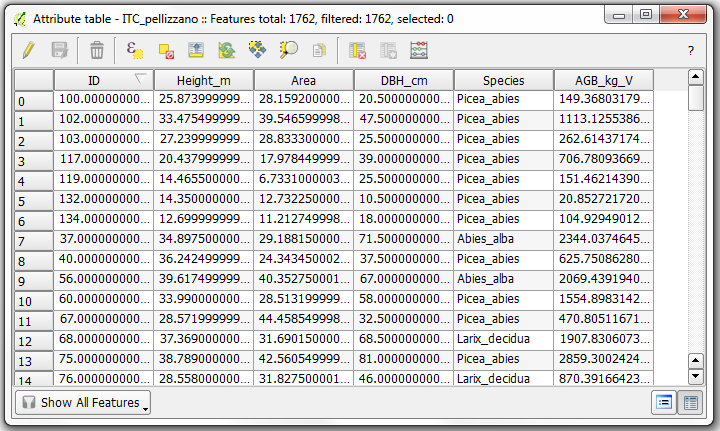

Stimatore lineare¶
Il modulo esegue la stima di parametri utilizzando uno stimatore lineare. Gli input allo stimatore sono un file vettoriale contente una colonna con l’indicazione del target da stimare (es: volume) in formato numerico, e (opzionale) l’indicazione delle variabili (attributi del vettore) da usare nella stima (es: percentili LIDAR, altezza LIDAR media, dimensione della chioma, ecc.). L’utente potrà anche inserire un vettoriale da usare nella fase di validazione o per mappare un’area più ampia (es. vettoriale di una griglia). Se si inserisce un vettoriale di validazione le metriche calcolate saranno: R2, RMSE e MAE.
Esempio: stima diametro singoli alberi Lo shapefile di input (“Dati di input vettoriale”) avrà per esempio una tabella degli attributidi questo tipo:
Nel caso della stima del diametro di un albero useremo come target la colonna “DBH_cm” e come variabili per esempio l’altezza dell’albero (colonna “Height_m”) e l’area della chioma (colonna “Area”). Le due varaibili andranno selezionate dal menu’ “Colonne delle feature da utilizzare”.
Input¶
Dati di input vettoriale di training: file vettoriale contente le aree di training e l’indicazione del parametro da stimare.
Seleziona la colonna con indicazione del parametro da stimare: selezionare tra le colonne del file vettoriale quella che indica il target da stimare.
File di selezione (opzionale): inserire il file ottenuto in output dal modulo “Selezione variabili per la stima”. Attivato solo se l’opzione “file” viene scelta nel menu “selezione variabili”.
Vettoriale di validazione (opzionale): file vettoriale contenente le aree di validazione o di mappatura. I nomi delle colonne del vettoriale devono essere le stesse delle varaibili utilizzate nella creazione del modello.
Seleziona la colonna per la validazione (opzionale): selezionare tra le colonne del file vettoriale quella che indica il target. Se si effettua la mappatura non ve scelto nulla.
Parametri¶
Inserire il numero di fold della cross-validation (opzionale): inserire il numero di fold della cross-validation.
Seleziona la trasformazione: tipologia di trasformazione dei dati. Può essere nessuna, radice quadra e logaritmica.
Selezione variabili:
no: nessuna selezione delle variabili. Tutte le variabili verranno utilizzate.
manuale: le variabili vengono selezionate manualmente.
file: le variabili sono scelte in base al file di output del modulo “Selezione variabili per la stima”.
Colonne delle features da utilizzare (opzionale): selezionare le varaibili da utilizzare separate da uno spazio. Attivo solo se la selezione varaibili manuale è selezionata.
Nome colonna per i valori della stima: inserire il nome della colonna del risultato ottenuto con stimatore lineare.
Output¶
Risultato: inserire il percorso e il nome del file di output.
Accuratezza: inserire il percorso e il nome del file di output .txt, contenente le metriche di accuratezza nel caso si sia inserito il vettoriale di validazione.